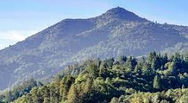
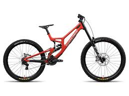
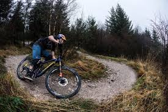
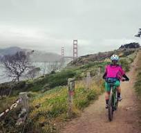
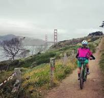

-
Farifax/Tamarancho
The Fairfax area, home to the storied Camp Tamarancho trail system, is considered the birthplace of mountain
biking and offers purpose-built, singletrack riding.
-
Solstice: Solstice trail is a fun and technical decent for advenced riders only, starting 3/4ths of the
way up 680 trail it then parreles trucks tail for a fun decent.
- Tamarancho Loop: A ticketed, classic 7-mile loop with varied terrain, including climbs, descents, and
singletrack sections like Alchemist Trail and Broken Dam Trail, perfect for an intermediate challenge.
-
Hobo Trail: Hobo is a dusty, short, and steep singletrack that can be found close to the to of iron
springs road, just below the center of camp Tamorancho. It starts as a sctetchy slidy steep descent then
transitions into
a rooty parrelel to the road below and finnishes with a nice and flowy section.
-
Endor (Flow Trail): A dedicated downhill, one-way trail with sculpted berms, jumps (all rollable), and
features that allow intermediate riders to practice speed and technique.
-
Mill Vally
Mill Valley offers access to the southern slopes of Mount Tam, providing a mix of
open fire roads and scenic,
multi-use paths often featuring stunning bay views.
- Hoo-Koo-E-Koo Fire Road to Eldridge Grade: A major advanced loop that links relentless, steep fire road
climbing from the valley floor all the way up toward the summit watershed.
-
Fern Creek Trail (Technical Climb & Descent): A legal, multi-use trail known for extremely steep pitches
and embedded obstacles. Climbing it clean or descending it with control is a major technical feat.
-
Bob Middagh Trail (Alto Bowl Preserve): A shorter, enjoyable singletrack trail that offers a more
technical
feel than the fire roads and is often included in larger local loops.

-
Mt. Tam
Mount Tamalpais (Mt. Tam) is defined by its sweeping views and extensive network
of fire roads that allow for big, challenging loops with significant climbs.
- Eldridge Grade: A long, consistent fire road climb that offers increasingly spectacular views of the Bay
Area as you ascend toward the East Peak.
-
Coast View Trail: An advanced multi-use trail known for beautiful coastal views and rolling terrain,
often combined with the Miwok Trail.
-
Rock Springs Trail (Connecting Route): A key, official multi-use connector trail on the upper mountain,
known for its exposure, rutting, and rocky technical sections that challenge descending control.

-
Phenix Lake
The Phoenix Lake area is a local favorite, offering shaded loops around a series
of
beautiful reservoirs with
generally well-maintained fire roads and trail connectors.
-
Worn Springs Fire Road: A very steep, legally sanctioned fire road climb/descent that tests traction
limits and descending control on loose, gravelly surfaces and steep gradients.
-
Eldridge Grade (Lower Section): This segment provides access to the lake area from the east and is a
great
intermediate fire road ride that can be linked to longer, more challenging routes.

-
Marin Headlands
The Headlands provide dramatic, exposed coastal riding with challenging climbs and
descents on fire roads,
rewarded by breathtaking views of the Pacific Ocean and the Golden Gate Bridge.
- Miwok Trail (Full Ridge Traverse at Pace): The entire length of this main fire road, testing endurance
on rolling terrain and high-speed cornering on loose, exposed surfaces; a physical test.
-
Bobcat Trail (The Grinder): A legal fire road that offers a sustained, long climb and a rewarding,
high-speed descent, used by advanced riders to maximize aerobic effort and descending control.
-
Coastal Trail to Rodeo Valley (Upper Legal Sections): Navigating the sanctioned, multi-use portions of
the Coastal Trail, which feature challenging climbs and technical terrain over loose rock and dirt.
 
